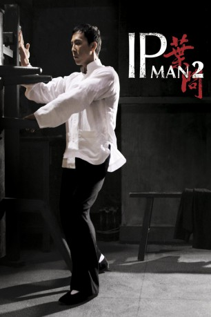

#480 Ip Man 2
 
 IMDB-Wertung: 7.6 / 10
IMDB-Wertung: 7.6 / 10  Metascore: 67
Metascore: 67 
Nachdem Ip Man im zweiten Sino-Japanischen Krieg seine Kampfk��nste gegen die Japaner einsetzte, flüchtet er 1949 nach Hongkong und versucht dort, eine Wing Tsun-Schule zu etablieren. Als der mächtige Master Hung dies erfährt, stellt er Ip Man vor eine heikle Aufgabe. Dieser soll sich zunächst in einem Kampf auf Zeit gegen Kämpfer aller möglichen Stile den nötigen Respekt verdienen. Auch seitens eines korrupten Polizei-Intendants und dem britischen Box-Champion Twister droht weitere Gefahr. Für Ip Man geht es erneut um die Ehre des chinesischen Volks aber auch um die Möglichkeit, seine Kampfschule zu eröffnen.
Jahr: 2010
Dauer: 108 Minuten
FSK: 18
Land: Hong-Kong Studio: Splendid FilmTonspuren:
Untertitel: Deutsch,
Auflösung: 1080p (1920x816) Größe: 9062 MB
Genre: Action, Drama, Sport
Regisseur: Wilson Yip
Drehbuch: Tai-lee Chan, Hiu-Yan Choi, Edmond Wong
Soundtrack: Kenji Kawai
Darsteller:
 Donnie Yen als Ip Man
Donnie Yen als Ip Man- Xiaoming Huang als Wong Shun-Leung
 Sammo Kam-Bo Hung als Master Hung Chun-Nam
Sammo Kam-Bo Hung als Master Hung Chun-Nam- Lynn Hung als Cheung Wing-Sing
 Darren Shahlavi als Mr. Miller / Twister
Darren Shahlavi als Mr. Miller / Twister- Charles Mayer als Superintendent Wallace
 Siu-Wong Fan als Jin Shan Zhao / Kam Shan-Chau
Siu-Wong Fan als Jin Shan Zhao / Kam Shan-Chau Simon Yam als Chow Ching-Chuen
Simon Yam als Chow Ching-Chuen- Brian Thomas Burrell als Emcee
 Tomer Oz als Referee , uncredited
Tomer Oz als Referee , uncredited Kent Cheng als Fatso
Kent Cheng als Fatso- Yu-Hang To als Cheng Wai-Kei
- Ka-nin Ngo als Leung Kan
- Calvin Ka-Sing Cheng als Chow Kong-Yiu
- Christian 'Kang' Bachini als Twister Supporter
- Li Chak als Yip Chun
- Jiang Dai-Yan als Bruce Lee
 Hark-On Fung als Master Cheng
Hark-On Fung als Master Cheng Ke Ming Lin als Master Lam
Ke Ming Lin als Master Lam Meng Lo als Master Law
Meng Lo als Master Law- Lu Mei-Fang als Master Hung's wife
- Stefan Morawietz als Twister's coach
- Tian Rui als Jin Shan Zhao's wife
- Siu Lung Sik als Yip Man's student
Datei: X:\HD-Eastern-Collections\Ip Man\Ip Man 2 (2010, FSK18, 1920x816).mkv seit 01.03.2015
Festplatte: HD Eastern+Western
 Es gibt insgesamt 11 Filme in der Gruppe 'HD-Eastern-Collections\Ip Man'
Es gibt insgesamt 11 Filme in der Gruppe 'HD-Eastern-Collections\Ip Man'